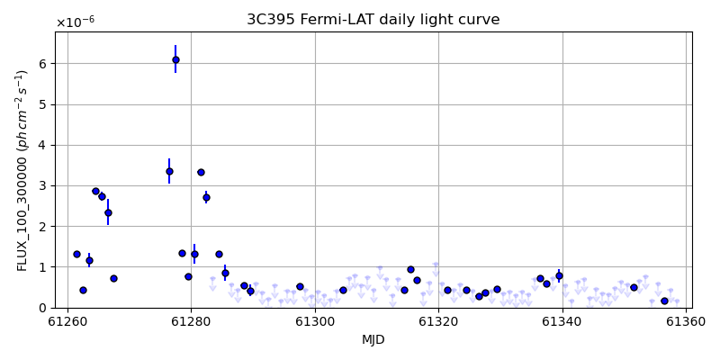
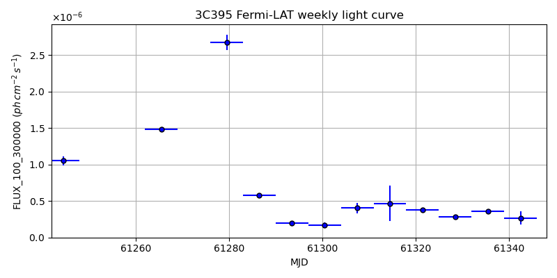
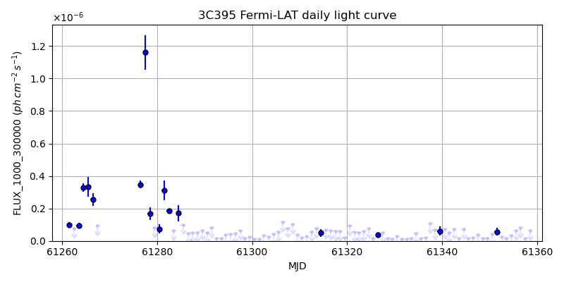
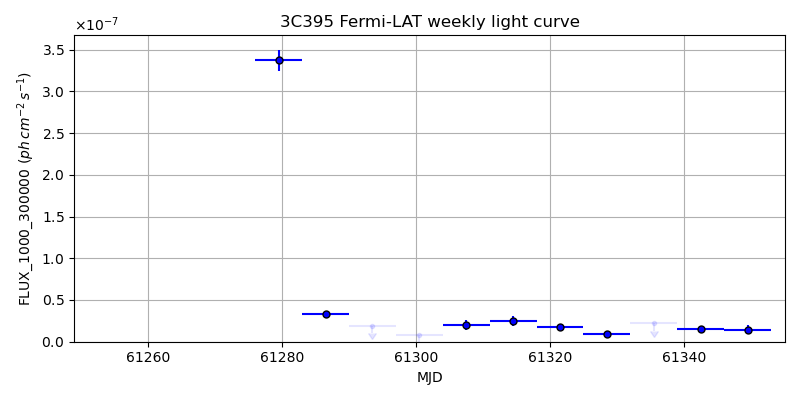

LAT Lightcurve site: https://fermi.gsfc.nasa.gov/ssc/data/access/lat/msl_lc/source/3C_395
NED: Query
Time of last update of this page: UT: 2026-11-15 16:26 (MJD: 61359.685)
| Property | Value |
|---|---|
| R.A. | 19:02:23.28 |
| Dec. | 32:00:00.0 |
| z | 0.635 |
| 3FGL SpectrumType | |
| 3FGL PL Index | -1.00 |
| 3FGL Flux_100_300000 | -1.00e+00 |
| 3FGL Flux_1000_300000 | -1.00e+00 |
| 3FGL Flux >200 GeV | -1.00e+00 |
| 3FGL Extrap. Crab >200 GeV | -1.00 |
| 3FGL Flux After EBL Absorption >200GeV | -1.00e+00 |
| 3FGL EBL Crab Fraction >200GeV | -1.00 |

| MJD | dMJD | Flux | dFlux | Frac3FGL | FracCrab>200GeV | EBLFracCrab>200GeV |
|---|---|---|---|---|---|---|
| 61354.50 | 0.50 | 1.80e-07 | 0.00e+00 | 0.00 | 0.00 | -0.00 |
| 61355.50 | 0.50 | 5.80e-07 | 0.00e+00 | 0.00 | 0.00 | -0.00 |
| 61356.50 | 0.50 | 1.73e-07 | 0.00e+00 | 0.00 | 0.00 | -0.00 |
| 61357.50 | 0.50 | 4.29e-07 | 0.00e+00 | 0.00 | 0.00 | -0.00 |
| 61358.50 | 0.50 | 1.78e-07 | 0.00e+00 | 0.00 | 0.00 | -0.00 |

| MJD | dMJD | Flux | dFlux | Frac3FGL | FracCrab>200GeV | EBLFracCrab>200GeV |
|---|---|---|---|---|---|---|
| 61321.50 | 3.50 | 3.75e-07 | 0.00e+00 | 0.00 | 0.00 | -0.00 |
| 61328.50 | 3.50 | 2.84e-07 | 0.00e+00 | 0.00 | 0.00 | -0.00 |
| 61335.50 | 3.50 | 3.56e-07 | 0.00e+00 | 0.00 | 0.00 | -0.00 |
| 61342.50 | 3.50 | 2.68e-07 | 0.00e+00 | 0.00 | 0.00 | -0.00 |
| 61349.50 | 3.50 | 2.74e-07 | 0.00e+00 | 0.00 | 0.00 | -0.00 |

| MJD | dMJD | Flux | dFlux | Frac3FGL | FracCrab>200GeV | EBLFracCrab>200GeV |
|---|---|---|---|---|---|---|
| 61354.50 | 0.50 | 3.51e-08 | 0.00e+00 | 0.00 | 0.00 | -0.00 |
| 61355.50 | 0.50 | 6.29e-08 | 0.00e+00 | 0.00 | 0.00 | -0.00 |
| 61356.50 | 0.50 | 8.07e-08 | 0.00e+00 | 0.00 | 0.00 | -0.00 |
| 61357.50 | 0.50 | 1.48e-08 | 0.00e+00 | 0.00 | 0.00 | -0.00 |
| 61358.50 | 0.50 | 6.41e-08 | 0.00e+00 | 0.00 | 0.00 | -0.00 |

| MJD | dMJD | Flux | dFlux | Frac3FGL | FracCrab>200GeV | EBLFracCrab>200GeV |
|---|---|---|---|---|---|---|
| 61321.50 | 3.50 | 1.77e-08 | 0.00e+00 | 0.00 | 0.00 | -0.00 |
| 61328.50 | 3.50 | 9.57e-09 | 0.00e+00 | 0.00 | 0.00 | -0.00 |
| 61335.50 | 3.50 | 2.20e-08 | 0.00e+00 | 0.00 | 0.00 | -0.00 |
| 61342.50 | 3.50 | 1.58e-08 | 0.00e+00 | 0.00 | 0.00 | -0.00 |
| 61349.50 | 3.50 | 1.43e-08 | 0.00e+00 | 0.00 | 0.00 | -0.00 |
--------------------------------------------------------- Using user-supplied coords: 19:02:23.28 32:00:00.0 2000 --------------------------------------------------------- FLWO UT night of: 2026-11-16 Local Sid. @ Midnight: 03:17 Sunset (-15.0) (local, UT): 18:34 01:34 Sunrise (-15.0) (local, UT): 05:43 12:43 Moonrise (local, UT): Moonset (local, UT): 22:45 05:45 Moon phase: 0.39 --------------------------------------------------------- AzTime LSID UT Obj_el Obj_az Mn_el Mn_az Sep. --------------------------------------------------------- 18:34 21:51 01:34 54.6 282.0 35.4 199.9 57.5 19:04 22:21 02:04 48.4 284.1 33.0 207.7 57.5 19:34 22:51 02:34 42.2 286.4 29.8 214.9 57.5 20:04 23:21 03:04 36.1 288.8 26.0 221.4 57.5 20:34 23:51 03:34 30.1 291.3 21.7 227.3 57.4 21:04 00:21 04:04 24.2 294.0 17.0 232.7 57.4 21:34 00:51 04:34 18.5 296.8 12.0 237.5 57.4 22:04 01:21 05:04 12.8 300.0 6.8 242.0 57.4 22:34 01:51 05:34 7.4 303.3 1.5 246.1 57.3 23:04 02:21 06:04 2.4 307.0 -3.2 250.0 57.3 23:34 02:51 06:34 -1.7 310.9 -10.4 253.7 57.3 00:04 03:21 07:04 -7.5 315.3 -16.3 257.2 57.3 00:34 03:52 07:34 -11.9 320.1 -22.3 260.7 57.3 01:04 04:22 08:04 -15.8 325.3 -28.4 264.3 57.3 01:34 04:52 08:34 -19.1 330.9 -34.5 267.9 57.4 02:04 05:22 09:04 -21.9 337.0 -40.6 271.8 57.4 02:34 05:52 09:34 -24.1 343.5 -46.6 276.2 57.4 03:04 06:22 10:04 -25.6 350.4 -52.6 281.2 57.5 03:34 06:52 10:34 -26.2 357.4 -58.5 287.4 57.6 04:04 07:22 11:04 -26.1 4.5 -64.1 295.4 57.6 04:34 07:52 11:34 -25.2 11.5 -69.3 306.7 57.7 05:04 08:22 12:04 -23.6 18.3 -73.6 323.6 57.8 05:34 08:52 12:34 -21.2 24.7 -76.0 348.2 57.9 05:43 09:01 12:43 -20.4 26.5 -76.3 356.5 57.9 --------------------------------------------------------- Dark hours >55 deg.: 0.00